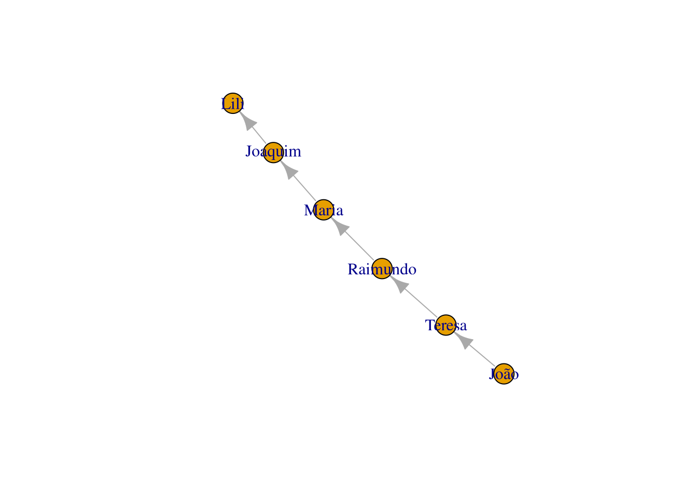
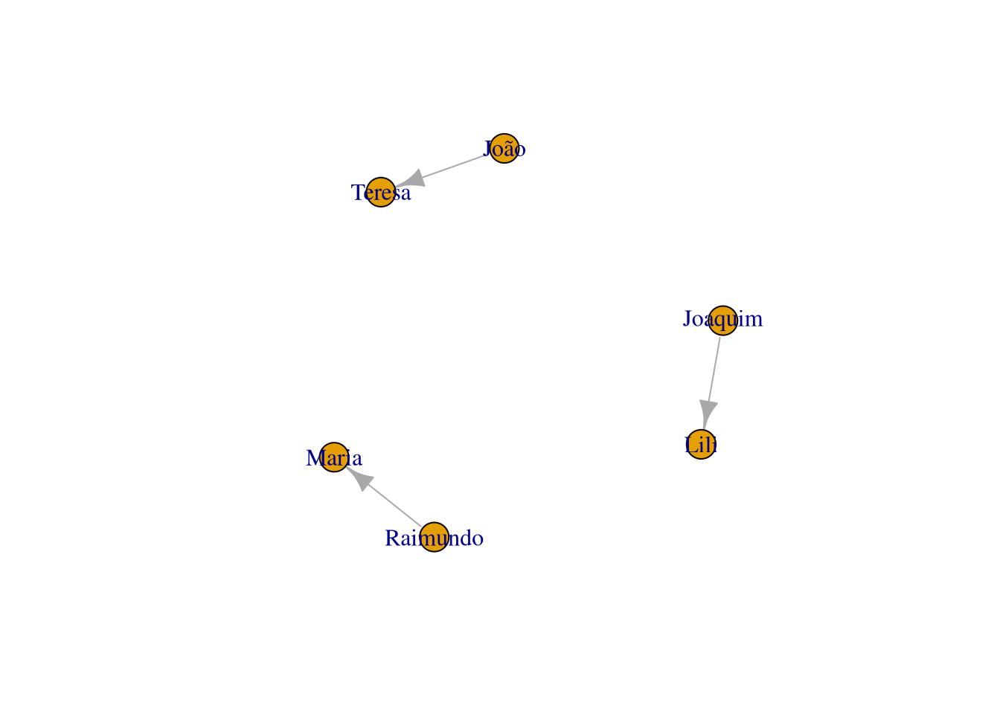
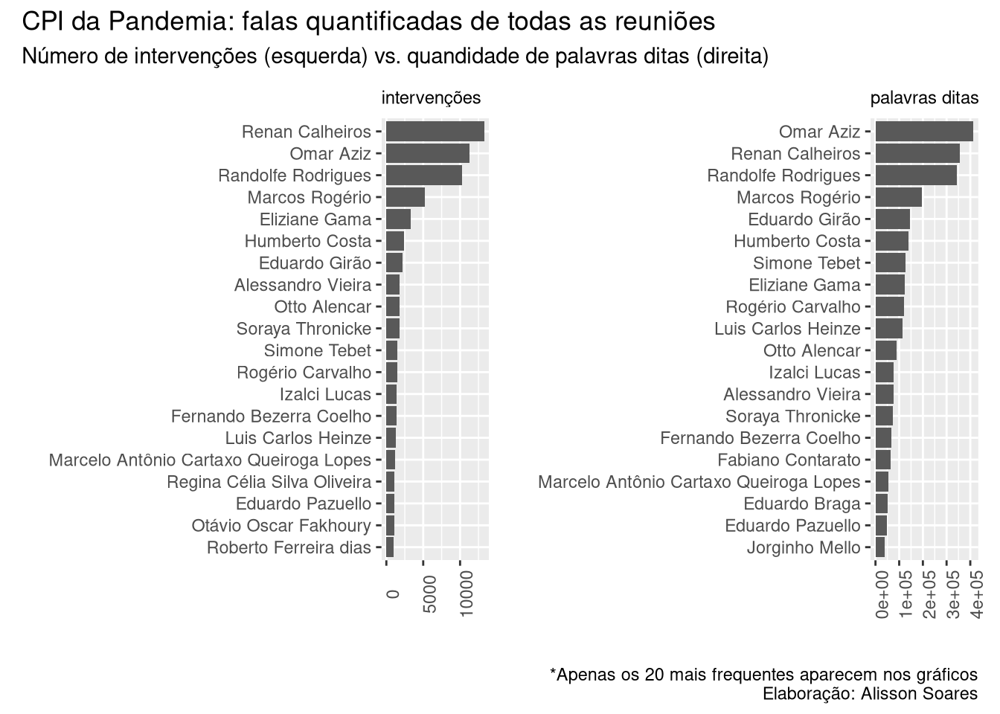

8 Análise Textual (text mining)
Orientações para ler este capítulo: Em vários dos códigos aqui presentes, usaremos a notação pacote::função, que dispensa carregar o pacote previamente. Apesar de desnecessária caso o pacote seja carregado anteriormente, ele facilitar saber qual função de que pacote está sendo usada, além de desambiguar, uma vez que há funções de nome idêntico em pacotes diferentes.
Assim, sempre confira se o pacote utilizado no exemplo já está instalado em sua máquina. No Rstudio, basta ir à aba “packages” e fazer a busca na lupa para conferir. Se preferir usar o console do R, use o comando installed.packages()[,1] para listar todos os pacotes instalados, e grep("dplyr", installed.packages()[,1], value=T) para checar se um pacote (no caso, o dplyr) está instalado.
Há também uma listagem com datasets para usar na análise textual, algumas inclusive já no formato R.
8.1 Introdução
A análise computacional de textos é praticamente um sinônimo de Mineração de Texto (text mining) e tem muito em comum com o campo de Processamento de Língua Natural ou Processamento de Linguagem Natural, mas não são exatamente a mesma coisa. Como vimos no capítulo sobre história da análise textual, esta existia antes antes da inteligência artifical e mesmo dos computadores. Há diversas funções nativas do R que usamos na mineração de texto/análise textual, mas também há diversas suítes de pacotes (pacotes com vários pacotes, com várias funções) focados em análise textual com diversas ferramentas, como o tidytext, quanteda (QUantitative ANalysis TExtual DAta), OpenNLP, Rweka, languageR, koRpus, RcmdrPlugin.temis, RKEA (R Keyphrase Extraction Algorithm), tm (Text Mining Package) e qdap (Quantitative Discourse Analysis Package). Estas são algumas das mais famosas suítes de pacotes, com diversas ferramentas, mas há alguns outros pacotes focados em funções mais específicas, como o pacote wordcloud, ggwordcloud (nuvem de palavras para o ggplot2, com mais opções), por exemplo. Há redundância entre estes pacotes, isto é, eles tem funções próprias muito semalhantes às funções de outros pacotes, o que não quer dizer que não existam diferenças significativas.
Há também pacotes em R para análise textual em modo gráfico. Um software bem conhecido de análise textual e que possui interface gráfica é o iramuteq (Interface de R pour les Analyses Multidimensionnelles de Textes et de Questionnaires), criado em 2009 por Pierre Ratinaud. Apesar de ainda ser bastante utilizado, o Iramuteq tem diversas limitações. Vimos um pouco sobre o RCommander. Há um plugin para ele dedicado à análise textual, o RcmdrPlugin.temis. Porém, sua última atualização ocorreu em 2018.
Dicas
- lista com diversos pacotes R, relacionados à Processamento de Linguagem Natural. Lista extensa, porém desatualizada.
8.2 Abordagens: saco de palavras (bag of words) e análise semântica (semantic parsing)
Na análise textual podemos analisar levando ou não em consideração a ordem das palavras ou sua função gramatical. Se o ordenamento ou a função das palavras não é importante, e queremos saber, por exemplo, apenas a frequência de termos, então faremos uma abordagem tipo “saco de palavras” (bag of words). Se precisamos saber as classes gramaticais, então a ordem das palavras é importante. Vamos começar os exemplos com um pacote que pega dados do Google Ngram e nos retorna frequência de termos longitudinalmente, com base de dados do Google Books.
8.3 Abordagem Bag of words
Na abordagem de “saco de palavras” (bag of words) a ordem dos termos não importa, bem como geralmente não importa a sua classe gramatical.
8.3.1 Frequência de palavras/termos e Ngrams
Numa abordagem do tipo saco-de-palavras, a abordagem mais simples, mas sempre útil, é verificar a frequência de certos termos. Apesar de simples, análises mais sofisticadas podem começar com a análise de frequência e partir para abordagens mais sofisticadas.
- aprendizado instrumental de uma língua, ao identificar as palavras mais frequentes em certa área do conhecimento.
- detecção de língua
- detecção de termos mais frequentes em uma busca
- identificação de palavras compostas
8.3.1.1 n-gram: explicando o conceito
Se partirmos do exemplo da frase “Ivo viu a uva” teremos
| unigram | N=1 | “a” “viu” “Ivo” “uva” |
| bigrams | N=2 | “a uva” “Ivo viu” “viu a” |
| trigrams | N=3 | “Ivo viu a” “viu a uva” |
| ngram=4 | N=4 | “Ivo viu a uva” |
| … | … | … |
Quando o N passa de 3, chamamos de ngram e seu valor. Agora um exemplo com o R. Primeiro veremos exemplos com o Google Ngram, que é mais simples, e depois montaremos nosso próprio ngram.
8.3.1.2 GoogleNgrams
A Google pegou sua enorme base de dados dos milhares de livros do Google Books e extraiu os termos mais frequentes, e os colocou disponível para consulta no site Goolge Books Ngram Viewer. O Google Ngrams facilitou a busca por ngrams nesta base de dados, naquilo que chamavam de “culturonomics”. O nome não pegou, a ferramenta tem suas limitações, mas ainda assim pode ser bem útil. A base de dados possui 5.2 milhões de livros, cerca de 4% de todos os livros já publicados. Para mais informações sobre a base de dados e sobre o GoogleNgram no site. Tanto o Python (com o get-ngrams) como o R (ngramr) possuem pacotes que usam os dados do Google Ngram.
Instalando o pacote ngramr
install.packages('ngramr')Carregando os pacote
library(ngramr)E um exemplo de uso
ng <- ngramr::ngram(c("Max Weber", "Émile Durkheim"), year_start = 1890)
ggplot2::ggplot(ng, aes(x=Year, y=Frequency, colour=Phrase)) +
geom_line()
Um exemplo da página do ngramr no Github com mais opções, usando a função ggram() no ngramr, que pega dados do GoogleNgram e plota os dados com o ggplot2:
ggram(c("monarchy", "democracy"), year_start = 1500, year_end = 2000,
corpus = "eng_gb_2012", ignore_case = TRUE,
geom = "area", geom_options = list(position = "stack")) +
labs(y = NULL)
É possível mudar entre diferentes corpus, que neste caso representam as diferentes línguas, como “eng_us_2019”, “eng_gb_2019”, “chi_sim_2019”, “fre_2019”, “ger_2019”, “heb_2019”, “ger_2012”, “spa_2012”, “rus_2012”, “ita_2012”. Para ver todos os corpus disponíveis veja no site busque a sessão “Corpora”. Infelizmente, não há corpus em português no Google Ngram.
classicos = c("Max Weber", "Émile Durkheim", "Karl Marx", "Gabriel Tarde", "Georg Simmel")
ggram(classicos, year_start = 1980, year_end = 2000,
# Para mudar lingua, mude o corpus
# ignore case: se diferencia maiúsculo de minúsculo
corpus = "fre_2019", ignore_case = TRUE,
# tipo de grafico em geom
geom = "line", geom_options = list()) +
# labs: label do eixo y
labs(y = NULL) 
Dicas Ngramr:
- Site do Books Ngram Viewer explicando seus parâmetros.
- PDF com a documentação do ngramr
- Instalação/Primeiros passos com o Ngramr na página do Github do ngramr
- Um projeto similar ao Google Ngram - inclusive usando parte do mesmo pessoal -, porém melhorado, é o bookworm:HalthiTrust do projeto Halthi Trust-Digital Livrary, com muito mais línguas, inclusive o português e mais opções de busca.
- Há uma API dedicada ao HalthiTrust, podendo baixar as bases de dados direto do R, o hathiTools
8.3.1.3 N-grams no R
library(ngram)
##
## Attaching package: 'ngram'
## The following object is masked from 'package:ngramr':
##
## ngramVamos pegar um trecho de Alfred Shutz.
txt="A Fenomenologia busca o início real de todo pensamento filosófico... Seu lugar é além - ou melhor, antes - de todas as distinções entre realismo e idealismo."Vamos quebrar o texto em ngrams. Geralmente usa-se valores entre 1 e 3.
ng <- ngram::ngram(txt,
# n = valor do ngram
n=3)
# imprimindo o objeto que criamos, que mostra o total de ngrams
ng
## An ngram object with 25 3-grams
# imprimindo os ngrams gerados.
ngram::get.ngrams(ng)
## [1] "além - ou" "início real de"
## [3] "- de todas" "antes - de"
## [5] "busca o início" "entre realismo e"
## [7] "o início real" "A Fenomenologia busca"
## [9] "distinções entre realismo" "lugar é além"
## [11] "as distinções entre" "de todo pensamento"
## [13] "filosófico... Seu lugar" "é além -"
## [15] "- ou melhor," "de todas as"
## [17] "Fenomenologia busca o" "melhor, antes -"
## [19] "todo pensamento filosófico..." "todas as distinções"
## [21] "ou melhor, antes" "realismo e idealismo."
## [23] "real de todo" "Seu lugar é"
## [25] "pensamento filosófico... Seu"Diversos outros pacotes::funções fazem a quebra em ngrams, como RWeka::NGramTokenizer ou o quanteda.
A função de ngram do quanteda tem a vantagem de poder definir um escopo de valores de ngram de uma vez, podendo gerar unigramas, bigramas e trigramas com um só comando. Em outros pacotes isto é possível apenas com pós processamento.
A quebra do texto em ngrams faz mais sentido quando, com eles, observamos os termos mais repetidos. Isso é o que vamos fazer a seguir. Num exemplo mais prático, fomos até o site gutenberg (site com vários livros gratuitos) e pegamos o link para o txt do livro “O Príncipe” de Maquiavel, em inglês.
# link para o livro "The Prince" de Maquiavel.
url.prince = "https://www.gutenberg.org/files/1232/1232-0.txt"
# carregando o url num objeto R
maquiavel <- readLines(url(url.prince))Observando a estrutura do objeto “maquiavel” que acabamos de criar:
# Como o objeto importado está como um vetor com vários elementos:
str(maquiavel)
## chr [1:5188] "The Project Gutenberg eBook of The Prince, by Nicolo Machiavelli" ...
# vemos que é um vetor com 5.188 itens. Precisamos transformar estes vários vetores em um só elemento com o comando
# paste0(var, collapse = " ")
maquiavel2 <- paste(maquiavel, collapse = " ")Por hora, usaremos o pacote tradicional ngram, escrito em C, e por isso, rápido.
Podemos fazer a sumarização (summarizing) obtendo a frequência de vezes que um ngram apareceu no texto, bem como também a frequência relativa (proporcional) com a função ngram:: get.phrasetable, que retorna um data frame. Rode o ngram com diferentes valores para ver qual deles ertorna resultados mais informativos do conteúdo.
prince_ngrams <- ngram::get.phrasetable(ngram::ngram(maquiavel2, n = 3))
# restringindo aos trigramas mais frequentes
prince_ngrams[1:16,]
## ngrams freq prop
## 1 he did not 20 0.0003770526
## 2 it is necessary 20 0.0003770526
## 3 in order to 19 0.0003582000
## 4 the King of 19 0.0003582000
## 5 Project Gutenberg-tm electronic 18 0.0003393473
## 6 ought to be 18 0.0003393473
## 7 in such a 18 0.0003393473
## 8 prince ought to 18 0.0003393473
## 9 so as to 17 0.0003204947
## 10 that it was 15 0.0002827894
## 11 those who have 15 0.0002827894
## 12 if he had 15 0.0002827894
## 13 for him to 14 0.0002639368
## 14 the Project Gutenberg 14 0.0002639368
## 15 such a way 14 0.0002639368
## 16 the death of 13 0.0002450842Dicas
Sugestão de leitura
- JURAFSKY, Dan.; MARTIN, James H. cap.3 N-gram Language Models de Speech and Language Processing - An Introduction to Natural Language Processing, Computational Linguistics, and Speech Recognition. 3ª Edição. 2020.
- Manual do pacote ngram
8.4 Remoção de palavra vazia (stopwords)
8.4.1 Criando lista com stopwords
Ao analisarmos texto, o mais frequente são palavras bem pouco informativas, como artigos “o”, “a” “os”, “as”. Para termos uma noção melhor removemos as chamadas “stopwords”.
manifesto <- "A História de toda a sociedade até hoje é a história da luta de classes."
# criamos uma pequena lista de stopwords para nosso exemplo atual
minhas_sw <- c("a","o", "e", "da", "de", "do")
# transformando o texto em vetor
manif_vetor <- manifesto %>%
# convertendo o texto todo para minúsculo
tolower %>%
# quebrando o texto em vetores
strsplit(., " ") %>%
# o comando strplit retorna lista. Vamos forçar para retornar como vetor char
unlist
manif_vetor
## [1] "a" "história" "de" "toda" "a" "sociedade"
## [7] "até" "hoje" "é" "a" "história" "da"
## [13] "luta" "de" "classes."Por se tratar de vetor, podemos usar comando tradicionais, com os operadores ! que indica negação, e %in% que checa se algo está contido em um vetor.
manif_vetor[!(manif_vetor) %in% minhas_sw]
## [1] "história" "toda" "sociedade" "até" "hoje" "é"
## [7] "história" "luta" "classes."Explicando:
(manif_vetor) %in% minhas_swcheca se itens de “manif_vetor” estão contidos em “minhas_sw”. Retorna um booleanoo de “TRUE” e “FALSE”.!inverte o comando anterior, checando agora quais itens de “manif_vetor” não estão contidos em “minhas_sw”, também retornando um vetor com booleanos de “TRUE” e “FALSE”.- Para obter os valores (as palavras), jogamos esta fórmula anterior dentro de “manif_vetor[fórmula_anterior]”.
As stopwords costumam ser as mesmas. E se já houvesse uma lista pronta? Existe. É possível encontrar listas prontas na internet, mas diversas funções no R já incluem em si tais listas. Para ver a lista padrão no R, use:
library(tm, quietly = T)# pegando apenas as primeiras 20 stopwords em inglês
tm::stopwords("en") %>% head(.,20)
## [1] "i" "me" "my" "myself" "we"
## [6] "our" "ours" "ourselves" "you" "your"
## [11] "yours" "yourself" "yourselves" "he" "him"
## [16] "his" "himself" "she" "her" "hers"
# vendo a lista em português
tm::stopwords("pt")
## [1] "de" "a" "o" "que" "e"
## [6] "do" "da" "em" "um" "para"
## [11] "com" "não" "uma" "os" "no"
## [16] "se" "na" "por" "mais" "as"
## [21] "dos" "como" "mas" "ao" "ele"
## [26] "das" "à" "seu" "sua" "ou"
## [31] "quando" "muito" "nos" "já" "eu"
## [36] "também" "só" "pelo" "pela" "até"
## [41] "isso" "ela" "entre" "depois" "sem"
## [46] "mesmo" "aos" "seus" "quem" "nas"
## [51] "me" "esse" "eles" "você" "essa"
## [56] "num" "nem" "suas" "meu" "às"
## [61] "minha" "numa" "pelos" "elas" "qual"
## [66] "nós" "lhe" "deles" "essas" "esses"
## [71] "pelas" "este" "dele" "tu" "te"
## [76] "vocês" "vos" "lhes" "meus" "minhas"
## [81] "teu" "tua" "teus" "tuas" "nosso"
## [86] "nossa" "nossos" "nossas" "dela" "delas"
## [91] "esta" "estes" "estas" "aquele" "aquela"
## [96] "aqueles" "aquelas" "isto" "aquilo" "estou"
## [101] "está" "estamos" "estão" "estive" "esteve"
## [106] "estivemos" "estiveram" "estava" "estávamos" "estavam"
## [111] "estivera" "estivéramos" "esteja" "estejamos" "estejam"
## [116] "estivesse" "estivéssemos" "estivessem" "estiver" "estivermos"
## [121] "estiverem" "hei" "há" "havemos" "hão"
## [126] "houve" "houvemos" "houveram" "houvera" "houvéramos"
## [131] "haja" "hajamos" "hajam" "houvesse" "houvéssemos"
## [136] "houvessem" "houver" "houvermos" "houverem" "houverei"
## [141] "houverá" "houveremos" "houverão" "houveria" "houveríamos"
## [146] "houveriam" "sou" "somos" "são" "era"
## [151] "éramos" "eram" "fui" "foi" "fomos"
## [156] "foram" "fora" "fôramos" "seja" "sejamos"
## [161] "sejam" "fosse" "fôssemos" "fossem" "for"
## [166] "formos" "forem" "serei" "será" "seremos"
## [171] "serão" "seria" "seríamos" "seriam" "tenho"
## [176] "tem" "temos" "tém" "tinha" "tínhamos"
## [181] "tinham" "tive" "teve" "tivemos" "tiveram"
## [186] "tivera" "tivéramos" "tenha" "tenhamos" "tenham"
## [191] "tivesse" "tivéssemos" "tivessem" "tiver" "tivermos"
## [196] "tiverem" "terei" "terá" "teremos" "terão"
## [201] "teria" "teríamos" "teriam"Há também o pacote stopwords, que no momento possui, para o português, de fontes como snowball, nltk e stopwords-iso. Para instalar, basta rodar o já conhecido install.packages("stopwords").
# vendo as linguagens disponiveis
stopwords::stopwords_getlanguages("snowball")
## [1] "da" "de" "en" "es" "fi" "fr" "hu" "ir" "it" "nl" "no" "pt" "ro" "ru" "sv"
# vendo as fontes de stopwords disponíveis
stopwords::stopwords_getsources()
## [1] "snowball" "stopwords-iso" "misc" "smart"
## [5] "marimo" "ancient" "nltk" "perseus"
# vendo um extrato das stopwords em português, fonte snowball
head(stopwords::stopwords("pt", source = "snowball"), 20)
## [1] "de" "a" "o" "que" "e" "do" "da" "em" "um" "para"
## [11] "com" "não" "uma" "os" "no" "se" "na" "por" "mais" "as"
# vendo um extrato das stopwords em português, fonte stopwords-iso
head(stopwords::stopwords("pt", source = "stopwords-iso"), 20)
## [1] "a" "acerca" "adeus" "agora" "ainda" "alem" "algmas"
## [8] "algo" "algumas" "alguns" "ali" "além" "ambas" "ambos"
## [15] "ano" "anos" "antes" "ao" "aonde" "aos"E comparando o número de elementos das diferentes fontes de stopwords
stopwords::stopwords("pt", source = "stopwords-iso") %>% length()
## [1] 560
stopwords::stopwords("pt", source = "snowball") %>% length()
## [1] 203
stopwords::stopwords("pt", source = "nltk") %>% length()
## [1] 204Para aplicar esta função no nosso texto e retirar as stopwords, podemos usar diversas funções (lista mais abaixo). Diferentes pacotes de análise textual possuem diferentes formas de retirar as stopwords.
Para adicionar novas palavras à lista de stopwords que vamos usar no momento, cria-se um novo vetor - chamamos aqui de “novas_stopwords” - com as novas palavras a serem retiradas, e em seguida o stopwords()
# checando o tamanho do vetor stopwords disponível
length(tm::stopwords("pt"))
## [1] 203
# criando novo vetor com mais palavras
novas_stopwords <- c("então", "portanto", tm::stopwords("pt"))
# checando se nossos termos foram incluídos
length(novas_stopwords)
## [1] 205Ou para facilitar a inclusão de novos termos, podemos fazer do seguinte modo:
# Separamos nossos termos apenas por espaço
novas <- "então portanto"
# quebrando o char em vetor de termos
# ao invés de usarmos unlist, podemos usar [[1]]
strsplit(novas, " ")[[1]]
## [1] "então" "portanto"
# colocando os novos termos em um novo vetor
novas_stopwords <- c(strsplit(novas, " ")[[1]], tm::stopwords("pt"))
length(novas_stopwords)
## [1] 205Deste modo, podemos ir acrescentando mais facilmente novos termos à nossa lista de stopwords.
Há outras funções com listas de stopwords, como qdap::stopwords e vários outras listas de stopwords no pacote - lexicon.
8.4.1.1 Removendo as stopwords
Para remover stopwords, temos diferentes pacotes com diferentes funções, como por exemplo:
dplyr::anti_join(stopwords(pt)),
tm::tm_map(corpus, removeWords, stopwords("english"),
tm::removeWords(texto, stopwords("pt")),
[tau::remove_stopwords()](https://cran.r-project.org/web//packages/tau/tau.pdf)
e qdap::rm_stopwords().
O dplyr possui ainda a função semi_join() que mostra termos em comum, que se repetem em x e y.
Já anti_join faz o oposto, mostra todas linhas de ‘x’ sem match em ‘y’, e é com ela que retiramos as stopwords.
8.4.1.1.1 Modo 1: pacote base
Se não quisermos carregar nenhum pacote, um modo possível de retirar stopwords de um vetorde palavras com o vetor de setopwords se dá com os operadores ! e %in%
manif_vetor[!(manif_vetor) %in% minhas_sw]
## [1] "história" "toda" "sociedade" "até" "hoje" "é"
## [7] "história" "luta" "classes."8.5 Estemização (stemming) e lematização
Imagine que tenha palavras como “escrever, escrevi, escreveu” e você está interessado nos verbos mais frequentes. É útil considerar estas variações do verbo como uma palavra só. Isso pode ser obtido de dois modos, através da stemização e por lematização. Em ambos o objetivo é o mesmo, reduzir a flexão a uma base comum ou raiz. A estemização funciona cortando um pedaço do final da palavra, ao passo que lematização reduz as variações à raiz, podendo inclusive pegar verbos irregulares. Por que então usar estemização? A construção de lematizadores é mais complicada, além de ser um processo mais demorado e que consome mais recursos.
8.5.1 Estemização
A estemização pode ser feita com o pacote SnowballC,que é baseado no snowball, que continua sendo desenvolvido no GitHub do projeto. Desenvolvida originalmente por Martin Porter, seu nome é um tributo ao SNOBOL, uma linguagem dos anos 1960 que lidava com strings. Para entender o algoritmo de estemização em português e alguns exemplos, veja aqui.
Carregando o pacote SnowballC
library(SnowballC)Exemplo de estemização
# Vendo as línguas disponíveis
SnowballC::getStemLanguages()
## [1] "arabic" "basque" "catalan" "danish" "dutch"
## [6] "english" "finnish" "french" "german" "greek"
## [11] "hindi" "hungarian" "indonesian" "irish" "italian"
## [16] "lithuanian" "nepali" "norwegian" "porter" "portuguese"
## [21] "romanian" "russian" "spanish" "swedish" "tamil"
## [26] "turkish"
# criando um vetor de palavras
palavras= c("plantar", "plantei", "ajudou", "ajudarás", "comer", "comendo")
# testando a stemização
SnowballC::wordStem(palavras, language = "portuguese")
## [1] "plant" "plant" "ajud" "ajud" "com" "com"Vamos testar com outras palavras:
palavras= c("estou", "está", "estamos", "sou", "és")
SnowballC::wordStem(palavras, language = "portuguese")
## [1] "estou" "está" "estam" "sou" "és"Repare que verbos irregulares como “ser” e “estar” não funcionaram muito bem. Uma alternativa é usar a lematização ao invés da stemização.
8.5.2 Lematização
EM CONSTRUÇÃO
A lematização reduz variações/inflexões de uma palavra, de modo que sejam analisados como um termo único. A lematização chega à forma raiz da palavra, ainda que sejam, por exemplo, verbos irregulares.
Funções como textstem::lemmatize_words() , koRpus::treetag, SnowballC::wordStem
nlp_lemmatizer,
e udpipe fazem este trabalho de lematização.
goffman_stigma <- c("The central feature of the stigmatized individual's situation in life can now be stated.",
"It is a question of what is often, if vaguely, called `acceptance'.",
"How does the stigmatized person respond to his situation?")
## Default lexicon::hash_lemmas dictionary
textstem::lemmatize_strings(goffman_stigma)
## [1] "The central feature of the stigmatize individual's situation in life can now be state."
## [2] "It be a question of what be often, if vague, call `acceptance'."
## [3] "How do the stigmatize person respond to his situation?"8.6 Nuvem de palavras
Vários pacotes fazem as chamadas nuvem de palavras no R. Um deles é o wordcloud, que além de fazer nuvens de palavras, também é capaz de fazê-lo comparando documentos,
Em sua forma mais simples
texto_tocqueville <- "Em nosso tempo, a liberdade de associação tornou-se uma garantia necessária contra a tirania da maioria. Nos Estados Unidos, quando uma vez um partido se toma dominante. todo o poder público passa para as suas mãos; seus amigos particulares ocupam todos os empregos e dispõem de todas as forças organizadas. Como os homens mais distintos do partido contrário não podem atravessar a barreira que os separa do poder, é preciso que possam se estabelecer fora; é preciso que a minoria oponha sua força moral inteira ao poderio material que a oprime. Opõe-se, pois, um perigo a um perigo mais temível. A onipotência da maioria parece-me um risco tão grande para as repúblicas americanas que o meio perigoso que se usa para limitá-la parece-me, ainda assim, um bem.
Exprimirei aqui um pensamento que lembrará o que disse em outra parte a respeito das liberdades comunais: não há país em que as associações sejam mais necessárias, para impedir o despotismo dos partidos ou a arbitrariedade do príncipe, do que aquele em que o estado social é democrático. Nas nações aristocráticas, os corpos secundários formam associações naturais que detêm os abusos de poder. Nos países em que semelhantes associações não existem, se os particulares não podem criar artificial e momentaneamente alguma coisa que se lhes assemelhe, não percebo mais nenhum dique contra nenhuma sorte de tirania, e um grande povo pode ser oprimido impunemente por um punhado de facciosos ou por um homem.
... Não podemos dissimular que a liberdade ilimitada de associação, em matéria política, é, de todas as liberdades, a última que um povo pode suportar. Se ela não o faz cair na anarquia, o faz tocá-la por assim dizer a cada instante. Essa liberdade, tão perigosa, oferece porém num ponto algumas garantias: nos países em que as associações são livres, as sociedades secretas são desconhecidas. Na América, há facciosos, mas não conspiradores."E para criar uma nuvem de palavras simples, basta usar o comando:
wordcloud::wordcloud(texto_tocqueville)
## Warning in tm_map.SimpleCorpus(corpus, tm::removePunctuation): transformation
## drops documents
## Warning in tm_map.SimpleCorpus(corpus, function(x) tm::removeWords(x,
## tm::stopwords())): transformation drops documents
E para usar num modo mais detalhado:
wordcloud::wordcloud(texto_tocqueville,
# se o input para esta função contém as frequências de palavras, o item abaixo deve ser descomentado
# freq,
# vetor com dois termos indicado o espectro de tamanho das palavras
scale=c(2,.8),
# número mínimo de repetições que uma palavra tem de ter para entrar no gráfico
min.freq = 2,
# número máximo de palavras a ser plotado na nuvem de palavras
max.words = 70,
# Não plotar palavras em ordem aleatória, mas sim em ordem decrescente
random.order = FALSE,
# cores, do menos frequente ao mais frequente
colors = c("royalblue","blue", "darkblue"))
## Warning in tm_map.SimpleCorpus(corpus, tm::removePunctuation): transformation
## drops documents
## Warning in tm_map.SimpleCorpus(corpus, function(x) tm::removeWords(x,
## tm::stopwords())): transformation drops documents
- Esta função aceita como entrada (input) tanto o texto puro como a tabela de frequência (e aí, deve-se usar o parâmetro
freq). Para textos pequenos, como é o caso aqui, não há problema em usar texto diretamente na função, mas partir do momento que textos se tornam grandes, o ideal é fazer a contagem previamente e mandar a tabela para a função wordcloud. - Além disso, fazer a contagem previamente permite fazer uma série de pré-processamentos no texto, como retirada de palavras pouco instrutivas (as stopwords), passar todas as palavras para minúsculo, etc.
- Vemos que algumas palavras frequentes não nos dizem muita coisa, como “que”, “nos”, “para”. Como queremos apreender algo do sentido do texto com a nuvem de palavras, seria interessante remover tais termos pouco significativos, as chamadas “palavras vazias” ou “stopwords”.
Usamos aí um pequeno texto. Caso tivéssemos um texto grande, este procedimento de mandar o texto direto para a função wordcloud::wordcloud não seria indicado. Além disso, precisamos fazer alguns pré-processamentos no texto para obter algo mais significativo.
Tocq <- texto_tocqueville |> as_tibble(falas = texto_tocqueville)
# tudo.tokens <- tudo %>% tidytext::unnest_tokens(word, falas)
# tudo.tokens <- tidytext::unnest_tokens(tudo.df , falas)
Tocq.tokens <- Tocq %>%
tidytext::unnest_tokens(word, value)
SW <- c(stopwords::stopwords('pt'), 'é', 'aqui', 'então', 'porque')
# retirando as stopwords
Tocq.semSW <- Tocq.tokens$word[!(tudo.tokens$word) %in% SW]
# Se quisermos observar algumas das palavras mais frequentes, sem as stopwords
head(Tocq.semSW, 40)
## [1] "tempo" "liberdade" "associação" "tornou" "garantia"
## [6] "necessária" "contra" "tirania" "maioria" "estados"
## [11] "unidos" "vez" "partido" "toma" "dominante"
## [16] "todo" "poder" "público" "passa" "mãos"
## [21] "amigos" "particulares" "ocupam" "todos" "empregos"
## [26] "dispõem" "todas" "forças" "organizadas" "homens"
## [31] "distintos" "partido" "contrário" "podem" "atravessar"
## [36] "barreira" "separa" "poder" "preciso" "possam"
Tocq.tibble <- tibble(words = Tocq.semSW )
words.counts <- Tocq.tibble %>% dplyr::count(words, sort = TRUE)
head(words.counts$words, 40) # Observando as palavras mais frequentes
## [1] "associações" "liberdade" "poder" "assim"
## [5] "associação" "contra" "facciosos" "faz"
## [9] "grande" "la" "liberdades" "maioria"
## [13] "países" "parece" "particulares" "partido"
## [17] "perigo" "pode" "podem" "povo"
## [21] "preciso" "tão" "tirania" "todas"
## [25] "abusos" "ainda" "alguma" "algumas"
## [29] "américa" "americanas" "amigos" "anarquia"
## [33] "arbitrariedade" "aristocráticas" "artificial" "assemelhe"
## [37] "atravessar" "barreira" "bem" "cada"
# Para não poluir demais a nuvem de palavras, restringir às 150 mais frequentes:
words.counts.head <- head(words.counts, 150)Gerando a nuvem de palavras:
wordcloud::wordcloud(words.counts.head$words,
# se o input para esta função contém as frequências de palavras, o item abaixo deve ser descomentado
freq = words.counts.head$n,
# vetor com dois termos indicado o espectro de tamanho das palavras
scale = c(3,1),
min.freq = 2, # Frequência mínima de termos que serão usados
# cores, do menos frequente ao mais frequente
colors = c("royalblue","blue", "darkblue", "black")
)8.7 Palavras em contexto (keyword-in-context KWIC)
Podemos ver como certas palavras são usadas em diversas frases no texto para ter uma ideia melhor do contexto em que aparecem.
No quanteda, usamos a função kwic(Dados, pattern = "padrão"), após o texto ter sido tokenizado.
Se ainda não tiver carregado o pacote Quanteda:
library(quanteda)
## Package version: 3.2.1
## Unicode version: 14.0
## ICU version: 70.1
## Parallel computing: 4 of 4 threads used.
## See https://quanteda.io for tutorials and examples.Vamos para um exemplo do texto “Ciência como vocação” de Max Weber:
texto = "Por fim, é da sabedoria quotidiana que algo pode ser verdadeiro, embora não seja nem belo, nem sagrado, nem bom. Mas estes são apenas os casos mais elementares da luta que entre si travam os deuses dos ordenamentos e valores singulares. Como será possível pretender decidir 'cientificamente' entre o valor da cultura francesa e o da alemã é coisa que não enxergo. Também aqui diferentes deuses lutam entre si, e para sempre. Acontece, embora noutro sentido, o mesmo que ocorria no mundo antigo, quando ainda se não tinha desencantado dos seus deuses e demónios: tal como os Gregos ofereciam sacrifícios, umas vezes, a Afrodite, outras a Apolo e, sobretudo, aos deuses da sua cidade, assim acontece ainda hoje, embora o culto se tenha desmistificado e careça da plástica mítica, mas intimamente verdadeira, daquela conduta. Sobre estes deuses e a sua eterna luta decide o destino, não decerto uma 'ciência'. Apenas se pode compreender o que seja o divino para uma e outra ordem ou numa e noutra ordem"# termos a serem buscados
termos.vetor= c("deus*", "divin*", "luta")
texto %>%
# precisamos primeiro tokenizar
tokens%>%
# rodando a função de palavras chave em contexto
kwic(.,
# termos a serem buscados. Pode ser um termo ou um vetor
termos.vetor,
# quantas palavras devem ser mostradas ao redor
4,
# Para pegar tanto palavras minúsculas como as em maiúsculo.
case_insensitive = TRUE)
## Keyword-in-context with 8 matches.
## [text1, 35] casos mais elementares da | luta | que entre si travam
## [text1, 41] entre si travam os | deuses | dos ordenamentos e valores
## [text1, 75] . Também aqui diferentes | deuses | lutam entre si,
## [text1, 106] tinha desencantado dos seus | deuses | e demónios: tal
## [text1, 131] , sobretudo, aos | deuses | da sua cidade,
## [text1, 162] conduta. Sobre estes | deuses | e a sua eterna
## [text1, 167] e a sua eterna | luta | decide o destino,
## [text1, 187] o que seja o | divino | para uma e outraNo KWIC é possível ainda:
- usar regex como padrão de busca, através do parâmetro
valuetype = "regexem - buscar por duas ou mais palavras em contexto com
pattern = phrase(
texto %>%
# precisamos primeiro tokenizar
tokens%>%
# rodando a função de palavras chave em contexto
kwic(.,
# termos a serem buscados. Pode ser um termo ou um vetor
pattern = phrase("eterna luta"),
# quantas palavras devem ser mostradas ao redor
7,
# Para pegar tanto palavras minúculas como as em maiúsculo.
case_insensitive = TRUE)
## Keyword-in-context with 1 match.
## [text1, 166:167] . Sobre estes deuses e a sua | eterna luta |
##
## decide o destino, não decerto uma